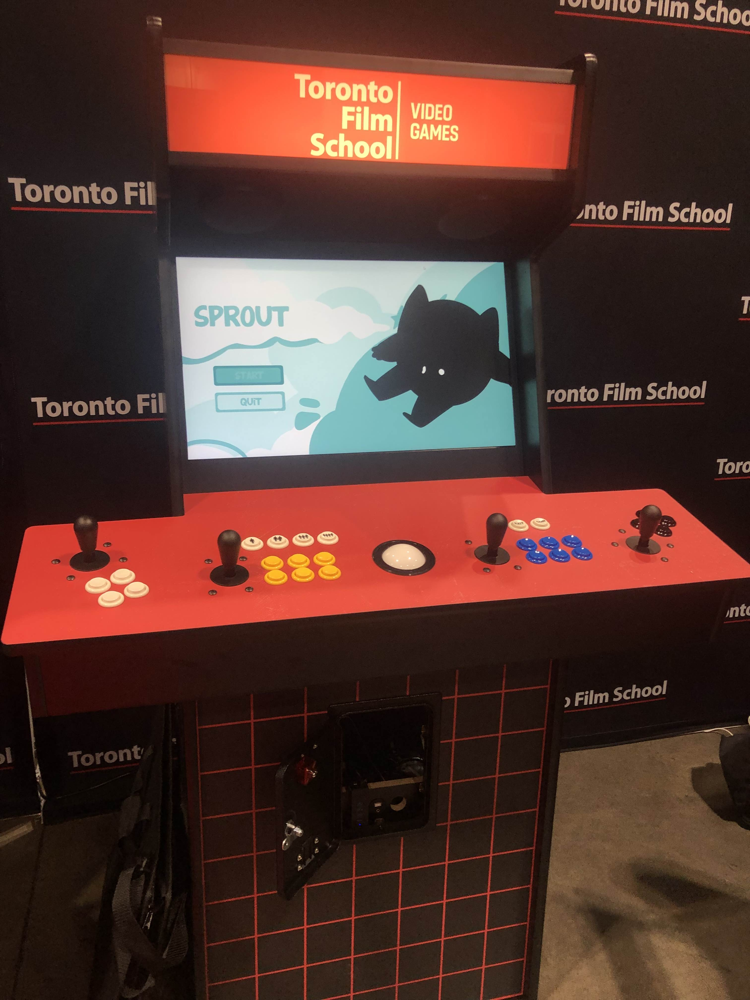
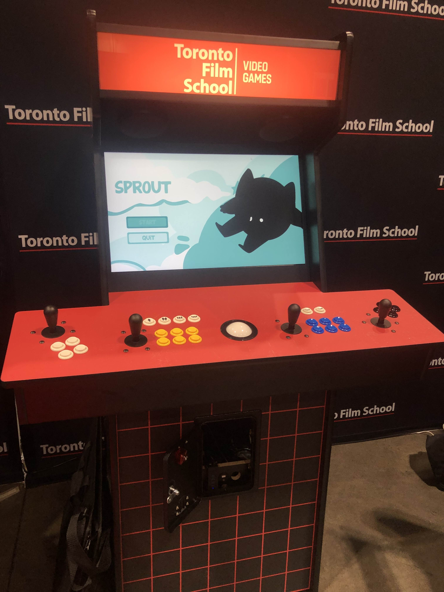

Role: Programmer, UI/UX | Year: 2024
Platform: WebGL | Genre: 2D Platformer | Art Style: Pixelated & Toony | Target Audience: Everyone
Overview: SPROUT is a 2D platformer developed in 72 hours for the Toronto Film School Spring Game Jam, themed around Duality. Players take on the role of Sprout, a character with the unique ability to switch between giant and tiny forms. This core mechanic drives both platforming challenges and puzzle-solving, requiring players to strategically change size to progress.
The game was showcased at FANEXPO Canada at Toronto Film School’s booth, where it was played on an arcade cabinet by convention attendees.
Gameplay: Players navigate vibrant city-inspired levels using Sprout’s size-shifting ability. Giant Sprout is powerful but slow, capable of moving heavy objects and breaking barriers. Tiny Sprout is fast and agile, able to wall jump and squeeze through narrow spaces. Mastery of both forms is required to reach the amusement park at the end of the journey.
Core Features:
Tools & Workflow: Unity, Visual Studio, Aseprite, Clip Studio Paint, Discord, Trello

 
